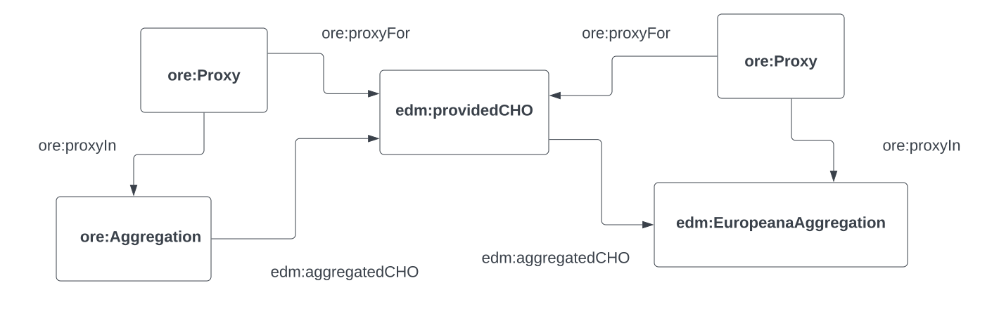

The Europeana SPARQL endpoint
The Europeana SPARQL endpoint#
Europeana is an initiative of the European Union aimed at enhancing the digital access to the collections of more than 3000 cultural heritage institutions acress Europe. Over the past few years, more than 50 million objects have been accumulated from these institutions. On the platform, users can find detailed information about a wide variety of cultural heritage artefacts, including paintings, books, music, and videos and audio files. The metadata that have been collected can also be searched using SPARQL on Europeana’s SPARQL endpoint, available at http://sparql.europeana.eu/.
The cell below defines the SPARQL endpoint and creates a function to run queries against this endpoint.
from SPARQLWrapper import SPARQLWrapper, JSON
from IPython.core.display import display, HTML
import pandas as pd
import re
endpoint = 'http://sparql.europeana.eu/'
sparql = SPARQLWrapper(endpoint)
def run_query(sparql_query):
sparql.setQuery(sparql_query)
sparql.setReturnFormat(JSON)
data = sparql.query().convert()
df = pd.json_normalize(data['results']['bindings'])
print(df.shape)
def print_results(df):
for i,row in df.iterrows():
for column in df.columns:
if re.search('value$' , column):
print( f'{column} => {row[column]}' )
print('-------')
Before you start to work with the Europeana data, it is useful to develop a good understanding of the Europeana data model. The model is somewhat complicated, and this module will only explain the basics that you need to know about to build your first queries.
A central resource in the datamodel is edm:providedCHO. This resource represents the cultural heritage object provided by the local institution. This edm:providedCHO is part of two ore:Aggregations. The term ‘Aggregation’ is taken from the Object Reuse and Exchange vocabulary, which was developed to describe compound digital objects. There are in fact two aggregations. Europeana makes a distinction between the metadata that are supplied by the local data provider on the one hand, and the metadata that has been added by Europeana on the other. These two aggregation also have different types. There is a local ‘ore:Aggregation’, next to an ‘edm:EuropeanaAggregation’.
Both aggregations contain ore:Proxy resources. These resources contain most of the descriptive metadata about the heritage objects. The ‘local’ Proxy, first of all, contains most of the metadata that have been supplied by the contributing instution. More detailed information about the Europeana Data Model can be found in the Primer.
The model can be visualised as follows:

This model may indeed look slightly complicated, but, to work with the Europeana data, you mainly need to know which predicates can be used for which resources.
The following properties all have the local ore:Proxy resource as their domain:
dc:title
dc:creator
dc:relation
dc:type
dcterms:created
dcterms:extent
dc:publisher
dc:identifier
dc:created
dc:source
edm:type
dc:coverage
dc:description
dc:format
dc:language
dc:subject
dcterms:isPartOf
dcterms:spatial
You can use these predicates to search metadata harvested from the local data provider.
The query below selects the title, the type and the date of creation of a small list of ten objects.
query = '''PREFIX dc: <http://purl.org/dc/elements/1.1/>
PREFIX dcterms: <http://purl.org/dc/terms/>
PREFIX edm: <http://www.europeana.eu/schemas/edm/>
PREFIX ore: <http://www.openarchives.org/ore/terms/>
SELECT ?title ?type ?date
WHERE {
?object dc:title ?title .
?object dc:type ?type .
?object dcterms:created ?date .
}
ORDER BY ?title
LIMIT 10
'''
run_query(query)
(10, 6)
The query explained above searches in all the 50 million objects available in Europeana, so it may be useful to search more specifilly for certain types of objects. You can state that the objects should be of type ‘IMAGE’. You can do this by making use of the dc:type property.
It must be noted, however, that the values in the dc:type predicate have not been entered consistently by all institutions. As a results of this, you will not necessarily receive all images.
query = '''PREFIX dc: <http://purl.org/dc/elements/1.1/>
PREFIX edm: <http://www.europeana.eu/schemas/edm/>
PREFIX ore: <http://www.openarchives.org/ore/terms/>
SELECT ?title ?type ?date
WHERE {
?object dc:title ?title .
?object dc:date ?date .
?object dc:type ?type .
?object dc:identifier ?id
OPTIONAL{
?object dc:publisher ?pub .
?object dc:created ?cr . } .
?object dc:type 'IMAGE' .
}
'''
run_query(query)
(10000, 6)
The ore:Proxy object in the local ore:Aggregation has descriptive metadata supplied by the data provided. Data about the data provider itself and about the rights associated with the object can be found in the ore:Aggregation Resource this local Proxy belongs to. The ore:Proxy is connected to the ore:Aggregation via the ore:proxyIn predicate.
In Europeana, the local ore:Aggregation is described using the following properties:
edm:dataProvider
edm:rights
edm:isShownAt
edm:isShownBy
edm:object
edm:provider
The edm:isShownBy predicate is generally followed by the link to the digital object. edm:isShownAt mostly contains a link to the landing page describing the object.
query = '''PREFIX dc: <http://purl.org/dc/elements/1.1/>
PREFIX edm: <http://www.europeana.eu/schemas/edm/>
PREFIX ore: <http://www.openarchives.org/ore/terms/>
SELECT ?title ?type ?institution ?rights
WHERE {
?object dc:title ?title .
?object dc:date ?date .
?object dc:type ?type .
?object dc:identifier ?id .
?object ore:proxyIn ?aggr .
?aggr edm:dataProvider ?institution .
?aggr edm:rights ?rights .
}
LIMIT 10
'''
run_query(query)
(10, 8)
Once you have set up a connection between a local ore:Proxy and a local ore:Aggregation, you can search for objects contributed by a specific data provider, such as the Rijksmuseum.
query = """
PREFIX dc: <http://purl.org/dc/elements/1.1/>
PREFIX edm: <http://www.europeana.eu/schemas/edm/>
PREFIX ore: <http://www.openarchives.org/ore/terms/>
PREFIX html: <http://www.w3.org/1999/xhtml/vocab#>
SELECT ?title ?object ?local_aggr
WHERE {
?object dc:title ?title .
?object ore:proxyIn ?local_aggr .
?local_aggr edm:dataProvider "Rijksmuseum" .
}
LIMIT 40
"""
run_query(query)
(40, 7)
You can also request the links of the digital objects. This link is usually provided as an object followung the edm:isShownAt predicate.
query = """
PREFIX dc: <http://purl.org/dc/elements/1.1/>
PREFIX edm: <http://www.europeana.eu/schemas/edm/>
PREFIX ore: <http://www.openarchives.org/ore/terms/>
PREFIX html: <http://www.w3.org/1999/xhtml/vocab#>
SELECT ?title ?url
WHERE {
?object dc:title ?title .
?object ore:proxyIn ?local_aggr .
?local_aggr edm:isShownAt ?url .
?local_aggr edm:dataProvider "Rijksmuseum" .
}
LIMIT 40
"""
run_query(query)
(40, 5)
The edm:aggregatedCHO is also part of an edm:EuropeanaAggregation. This resource can be described using the following predicates:
edm:collectionName
edm:country
edm:landingPage
edm:language
Once you have found the edm:EuropeanaAggregation associated with an edm:aggregatedCHO, you search for objects managed by a cultural heritage institution in a specific langauge, or for objects in a specific langauge.
The SPARQL query below searches for images supplied by an institution located in Belgium in the Dutch language.
query = """
PREFIX dc: <http://purl.org/dc/elements/1.1/>
PREFIX edm: <http://www.europeana.eu/schemas/edm/>
PREFIX ore: <http://www.openarchives.org/ore/terms/>
PREFIX html: <http://www.w3.org/1999/xhtml/vocab#>
SELECT ?title ?creator ?img_url ?eur_aggr
WHERE {
?object edm:type "IMAGE" .
?object dc:title ?title .
?object dc:creator ?creator .
?object ore:proxyIn ?local_aggr .
?object ore:proxyFor ?cho .
?eur_aggr edm:aggregatedCHO ?cho .
?eur_aggr a edm:EuropeanaAggregation .
?local_aggr edm:provider ?glam_inst .
?eur_aggr edm:country 'belgium' .
?eur_aggr edm:language ?lang .
?eur_aggr edm:language 'nl' .
OPTIONAL{ ?local_aggr edm:object ?img_url . } .
}
"""
run_query(query)
(10000, 10)